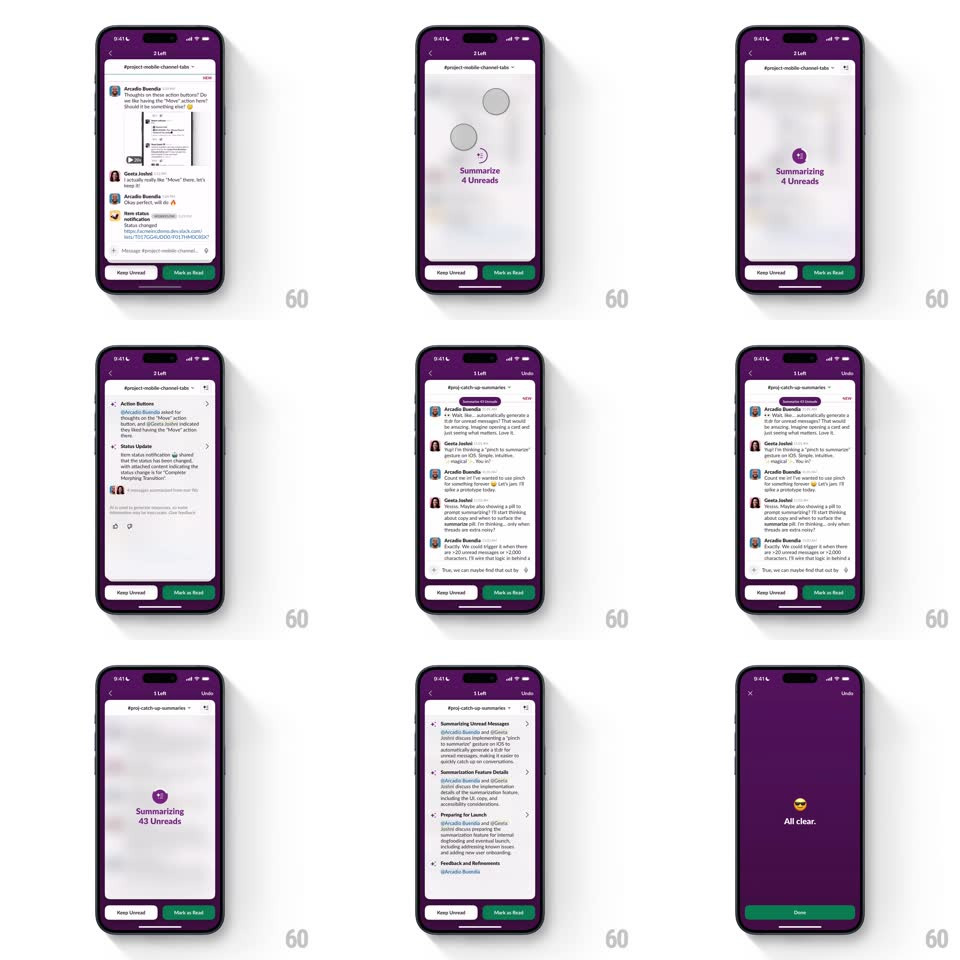

Media
Frame-by-frame

Rebuild this interaction 1:1: Slack's pinch-to-summarize - pinching on a channel with unreads condenses the thread list into an AI recap card with a blur transition, bulleted summaries, and a remaining-unreads counter that ticks down until "All clear."

Rebuild this interaction 1:1: Slack's pinch-to-summarize - pinching on a channel with unreads condenses the thread list into an AI recap card with a blur transition, bulleted summaries, and a remaining-unreads counter that ticks down until "All clear." ## Integration Integration: stack-agnostic spec - springs given as stiffness/damping, timed motions as duration + curve; map every value to your framework and animation library of choice. ## Scene Slack's dark purple mobile app: a channel list, then channels with unread threads showing "Keep Unread" / "Mark as Read" actions, an AI summary view with a purple sparkle orb and "Summarize N Unreads" label, bulleted recap sections, and a final "All clear." state with a Done button. ## Motion spec Pattern: pinch-driven blur collapse into summary, ~500ms. - Pinch: as fingers close, the message list scales down (1 -> 0.94) and blurs (0 -> 12px) in proportion to pinch progress (gesture-driven, 1:1). - Commit: past 50% pinch, the list dissolves through the blur (250ms) into the summary state: the sparkle orb scales in (0 -> 1, spring ~320/18) above "Summarize N Unreads" while the content behind stays blurred (16px). - Reveal: the AI summary card unblurs and fades up (300ms) with bulleted sections; each channel's summary stacks as the user pinches further, and the header counter decrements (e.g. "3 Left" -> "1 Left") with a quick number flip (150ms). - Exit: after the last summary, the view crossfades (250ms) to "All clear." with a centered emoji; Done returns to the list. ## Calibration - Pinch progress maps 1:1 to scale/blur until commit - reversible before 50%. - The counter flip is snappy; no slow counting animation. ## Reduced motion Tap-to-summarize path with a simple crossfade (250ms). ## Don't miss - Blur and scale are gesture-coupled, not time-coupled, until the commit threshold. - "Keep Unread" and "Mark as Read" remain visible and tappable during the summary state.